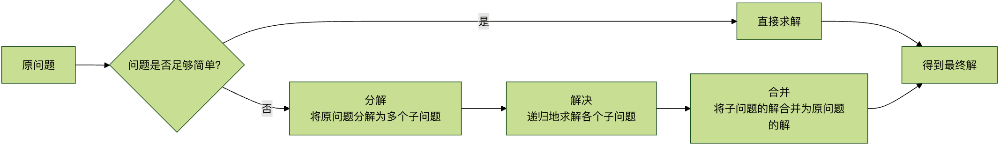

Divide and Conquer Algorithm
Divide and conquer is a very important algorithm paradigm built on multi-branch recursion. Literally, it means "divide and rule": a complex problem is divided into two or more identical or similar subproblems until the subproblems can be solved directly and simply, and the solution to the original problem is the combination of the solutions to the subproblems.
Simply put, divide and conquer consists of three steps:Divide -> Conquer -> Combine。
Imagine you have a large pile of building blocks in front of you that need to be sorted by color. If you tackle it directly, you may be overwhelmed. A smarter approach is: first split the pile into two smaller piles, then sort each smaller pile separately, and finally merge the two sorted smaller piles together. ThisDivide and conquerprocess is the core idea of the divide and conquer algorithm.
Divide and Conquer AlgorithmIt is like the way a smart team leader solves a big problem:
- Divide: Break the big problem into several small problems of the same type.
- Conquer: recursively solve these subproblems
- 合并（Combine）: Merge the solutions to the small problems into the solution to the original problem.
Real-world cases:
- Company management: CEO → Department Manager → Team Leader → Regular Employee
- Military command: Commander → Army Commander → Division Commander → Regiment Commander → Company Commander
- Book organization: First classify by broad category, then by subcategory, and finally sort alphabetically.
- Treasure hunt game: Divide the large map into small blocks and search each block
| Problem characteristics | Other methods | Divide-and-conquer approach |
|---|---|---|
| Large-scale data | May be inefficient | Decompose and process in parallel |
| Complex structures | Difficult to solve directly | Simplify subproblems |
| Can be defined recursively | Requires complex logic | Naturally suited for recursion |
| Independent subproblems | Difficult to parallelize | Perfectly supports parallelism |
Core ideas and steps
Divide and conquer algorithms usually follow a clear three-step framework. We can intuitively understand it with the following flowchart:

The figure above illustrates: The algorithm first determines whether the current problem is simple enough to solve directly. If so, it solves it directly and returns the result; if not, it decomposes the problem into several subproblems, recursively solves each subproblem, and finally merges the subproblem results to obtain the final answer.
Specifically, these three steps are:
- Divide: Decompose the original problem into several smaller, mutually independent subproblems that have the same form as the original problem.
- Conquer: Recursively solve each subproblem. If a subproblem is small enough in scale, solve it directly.
- Merge: Merge the solutions of the subproblems to form the solution to the original problem.
Classic applications of divide and conquer algorithms
To help you better understand how the divide and conquer algorithm works, let's look at two of the most classic examples.
Application 1: Merge Sort
Merge sort is a perfect embodiment of the divide and conquer idea. Its goal isSort an unordered array into an ordered array.。
Algorithm steps:
- Divide: Divide the current array from the middle position into left and right subarrays.
- Conquer: Recursively perform merge sort on the left subarray and the right subarray.
- Merge: Merge the two already-sorted ordered subarrays into a new ordered array.
Code example:
Example
"""
Merge sort main function
:param arr: The list to be sorted
:return: The new sorted list
"""
# 1. Conquer: If the array length is 0 or 1, return directly (base case)
if len(arr) <= 1:
return arr
# 2. Divide: Find the midpoint and split the array
mid = len(arr) // 2
left_half = arr[:mid] # Left subarray
right_half = arr[mid:] # Right subarray
# 3. Conquer: Recursively sort the left and right subarrays
left_sorted = merge_sort(left_half)
right_sorted = merge_sort(right_half)
# 4. Merge: Merge the two sorted arrays
return merge(left_sorted, right_sorted)
def merge(left, right):
"""
Merge two sorted lists
:param left: Sorted list A
:param right: Sorted list B
:return: The merged sorted list
"""
merged = [] # List used to store the merge result
i = j = 0 # i and j are pointers to left and right, respectively
# Compare the heads of the two lists and put the smaller element into merged
while i < len(left) and j < len(right):
if left[i] <= right[j]:
merged.append(left[i])
i += 1
else:
merged.append(right[j])
j += 1
# Add any remaining elements (if any) directly to the end of merged
# Because left and right are already sorted, the remaining part is also sorted
merged.extend(left[i:])
merged.extend(right[j:])
return merged
# Test data
test_array = [38, 27, 43, 3, 9, 82, 10]
print("Original array:", test_array)
sorted_array = merge_sort(test_array)
print("Sorted array:", sorted_array)
# Output: Original array: [38, 27, 43, 3, 9, 82, 10]
# Output: Sorted array: [3, 9, 10, 27, 38, 43, 82]
Application 2: Binary Search
Binary search is used inA sorted arrayQuickly locate the target value in it. It continuously splits the search range in half, making it a simplified version of the divide-and-conquer strategy (usually handling only one subproblem, with no need to merge).
Algorithm steps:
- Divide: Find the middle element of the array.
- Conquer：
- If the middle element equals the target value, the search succeeds.
- If the target value is smaller than the middle element, recursively search in the left half.
- If the target value is greater than the middle element, recursively search in the right half.
- Merge: Binary search usually does not need a merge step, because once the target value is found, its position can be returned directly.
Code example:
Example
"""
Binary search (recursive version)
:param arr: Sorted list
:param target: The target value to search for
:param low: The starting index of the current search range
:param high: The ending index of the current search range
:return: The index of the target value, or -1 if not found
"""
# Base case: The search range is invalid, meaning the target is not found
if low > high:
return -1
# Divide: Calculate the middle index
mid = (low + high) // 2
# Conquer: Decide and recurse
if arr[mid] == target:
return mid # Target found, return the index
elif target < arr[mid]:
# Target is in the left half, recursively search the left half
return binary_search(arr, target, low, mid - 1)
else:
# Target is in the right half, recursively search the right half
return binary_search(arr, target, mid + 1, high)
# Test data (must be sorted!)
sorted_list = [2, 5, 8, 12, 16, 23, 38, 56, 72, 91]
target_value = 23
result = binary_search(sorted_list, target_value, 0, len(sorted_list) - 1)
if result != -1:
print(f"The index of target value {target_value} in the array is: {result}")
else:
print(f"Target value {target_value} is not in the array.")
# Output: The index of target value 23 in the array is: 5
Characteristics and complexity analysis of divide and conquer algorithms
Algorithm characteristics
| Features | Description |
|---|---|
| Problem can be decomposed | The original problem must be decomposable into smaller similar subproblems. |
| Subproblems are independent | It is best for the subproblems to be independent of each other, which makes solving and merging simpler. |
| Has a termination condition | There must be a simple base condition so that when the problem scale is small enough, it can be solved directly. |
| Solutions can be merged | The solutions of the subproblems must be efficiently mergeable into the solution to the original problem. |
Time complexity analysis
The time complexity of divide and conquer algorithms can usually be expressed withMaster theoremTo analyze, the general form of its recurrence relation is: $$ T(n) = aT(\frac{n}{b}) + f(n) $$ where:
nis the problem size.ais the number of subproblems produced by decomposition.n/bis the size of each subproblem.f(n)is the time spent on the decomposition and merge steps.
For example, for merge sort:
a = 2(split into two subarrays)b = 2(the size of each subarray is halved)f(n) = O(n)(Merging two sorted arrays takes linear time)- According to the Master Theorem, its time complexity isO(n log n)。
Practice exercises
Now, it is time to consolidate your understanding of divide and conquer algorithms. Please try to complete the following exercises:
Exercise 1: Implement Quick SortQuick sort is another classic divide and conquer algorithm. Its idea is:
- Divide: Select a "pivot" element and rearrange the array so that all elements smaller than the pivot are placed on the left and all elements larger than the pivot are placed on the right (partition operation).
- Conquer: Recursively perform quick sort on the subarrays on the left and right sides of the pivot.
- Merge: No explicit merge is needed, because after the partition operation the array is already partially ordered.
Your task: Based on the description above, try to write Python code for Quick Sort.
Exercise 2: Find the maximum subarray sum in an arrayProblem: Given an integer array (which may contain negative numbers), find a contiguous subarray with the maximum sum. For example, for[-2, 1, -3, 4, -1, 2, 1, -5, 4], the maximum subarray is[4, -1, 2, 1], and their sum is6。
Hint (divide-and-conquer approach)：
- Split the array into left and right halves from the middle.
- The maximum subarray sum may occur in:Left half、Right half, orSpanning the midpoint。
- Recursively solve for the maximum subarray sum in the left half and the right half.
- Compute the maximum subarray sum that crosses the middle point (this requires accumulating to the left and to the right from the middle point separately to find the maximum).
- Return the maximum of the three.
Try to solve this problem using the divide-and-conquer strategy.
other extensions